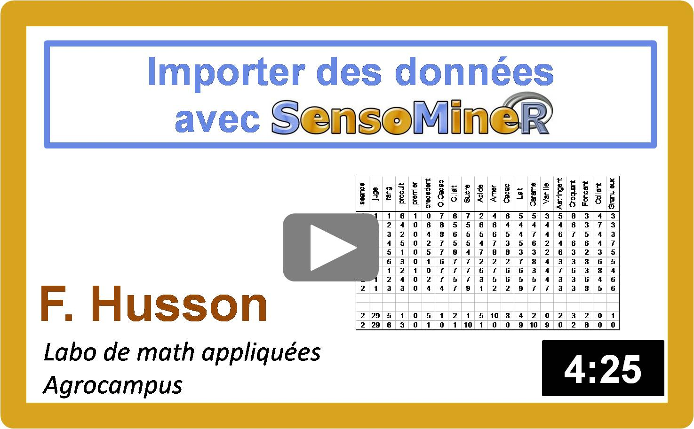

Etude de cas sur la cartographie des préférences
A vous de jouer !
Description du jeu de données :
Trois évaluations sensorielles ont été organisées pour caractériser 10 vins blancs du Val de Loire. L'ensemble des données est disponible dans le fichier zip suivant.
Les 10 vins sont présentés dans le fichier noms_vins.doc. Il s'agit de 5 Touraine du cépage Sauvignon (les vins numérotés de 1 à 5) et 5 Vouvray du cépage Chenin (les vins de 6 à 10).
Un jury de 10 oenologues a évalué chaque vin une seule fois selon une liste de 39 descripteurs (QDA_vins_pro.csv).
Un jury de 11 étudiants a évalué chaque vin 2 fois selon une liste de 15 descripteurs (QDA_vins_jury1.csv).
Un jury de 12 étudiants a évalué chaque vin 3 fois selon une liste de 15 descripteurs (QDA_vins_jury2.Ccsv).
Les notes varient entre 0 et 10; une note de 0 signifie que l'odeur ou la saveur évaluée est extrêmement faible et une note de 10 signifie qu'elle est très importante.
Par ailleurs, un jury de 60 consommateurs a donné une note d'appréciation pour chaque vin allant de 0, je n'aime pas du tout ce vin, à 10, j'aime beaucoup ce vin (hedo_vins.csv).
Questions :
- Considérer l'évaluation sensorielle des experts et calculer le tableau moyen avec en lignes les produits, en colonnes les descripteurs et dans une case du tableau la moyenne des notes pour ce produit et ce descripteur.
- Après avoir vérifié que les lignes de ce tableau étaient rangées dans le même ordre que dans le tableau des préférences, concaténer le tableau des moyennes sensorielles et le tableau des préférences.
- Faire une cartographie interne et commenter les résultats.
- Faire une cartographie externe en utilisant un modèle vectoriel puis un modèle quadratique.
- Construire une autre carte des préférences en utilisant un autre jeu de données sensorielles et comparer les cartes.
Complément : importation de données dans R
|  |